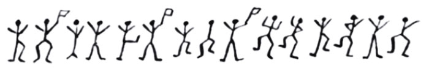

üïπ Measuring and Playing with Proximity
Don’t Stand so Close to Me
A Model for Proximity: The Voronoi and the Delaunay Diagrams
So how do we model “proximity”? Let us take a quick look at this description of Predator-Prey Dynamics.
Plotting the Delaunay and Voronoi Diagrams
So here is an example of a computationally plotted Delaunay Triangulation and Voronoi Diagram:
{kind=link}
{kind=link}
{kind=link}
How do we plot these diagrams?
We will use this tool: Geogebra
Download and install this on your laptops. You can also use it in your browser https://www.geogebra.org/classic?lang=en and download the Geogebra (.ggb) files that you create.
- Exercise 1: Let us first see Soho with the Voronoi Diagram
Now let us make such a diagram step by step:
Exercise 2: Let us try with just three points and see what we need to do to plot the Voronoi Diagram.
Exercise 3: With 4 points: Four Pointer Voronoi
Exercise 4: Let us now add more points. How do we make a multi-point Voronoi? We need to make a “list of points” in Geogebra
Discussion
- Did you see how the Delaunay Triangulation seems to “dislike” obtuse-angles, and changes the triangulation pattern when a certain (sum of) angles become more than 180?
- Wasn’t that a very Kandinsky-like thing to do, even for an algorithm?
- The Delaunay Triangulation gives us a set of triangular elements that cover our desired surface
- The Voronoi Diagram uses the Delaunay to give us possibly infinite proximal neighbourhoods.
Fun Stuff with Geogebra and Voronoi
- Predator Prey Movement….
- Create a set of points in Geogebra.
- Colour/Shape one of the outermost points as a predator which circles the herd.
- Use the Voronoi diagram to model the Zone of Danger for each of the animals in the inner herd.
- Try Animation in Geogebra !!
- Service Areas with Voronoi
- Import a 5km * 5km square of area in your home town, from Google Maps, into Geogebra.
- Locate points of interest, all in one category ( ATMs, Post Offices, Hospitals, Police Stations…)
- Plot the Voronoi Diagram to show the area served by each such institution.
- Calculate the area in Geogebra.
- Assume a flat population/sqkm and use that to calculate the number of people served by each.
All of this can be done without leaving Geogebra !!
- Voronoi Portraits and Facial Recognition
A. My name is Arnold Schwarzenegger
- Take a picture of yourself and import it into Geogebra
- Plot Points on the Portrait such that the main facial features are defined.
- Use a Delaunay Triangulation of these points to create a Portrait.

B. My Face is My Fortune
- Do the same for a famous person, past or present.
- Run a small survey in the class to see how many people can recognize celebrity!
Other Distances?
Hamming Distances
We have used the simplest and most common of geometric distances between entities, the Euclidean Distance to model proximity. Are there other measures of distance?
- How would you measure distance between digital words? For example \(10010011\) and \(11011011\)?
The Hamming distance between two equal-length strings of symbols is the number of positions at which the corresponding symbols are different. The symbols may be letters, bits, or decimal digits, among other possibilities. For example, the Hamming distance between: “karolin” and “kathrin” is 3. “karolin” and “kerstin” is 3. “kathrin” and “kerstin” is 4. 0000 and 1111 is 4. 2173896 and 2233796 is 3.
The Hamming Distance can be calculated using a logical operation known as “Exclusive-OR” or “XOR”.
Great Circle Distances
How would you measure distance over a curved surface such as the earth?
View the path here: https://www.greatcirclemap.com/ Calculate distances here: https://www.gpsvisualizer.com/calculators
Taxicab Distances
And if a man hatta live in New York?


We will use the Euclidean and maybe other concepts of distance when we get into our Machine Learning models!
Plotting Sihouette Diagrams
To be written up!! https://orange3.readthedocs.io/projects/orange-visual-programming/en/latest/widgets/visualize/silhouetteplot.html
So where are all these Proximities used?
Proximities in the GPS System
The GPS system is all about wanting to know if one is proximate to a desired landmark! But how does it work?
Based on a measurement of two proximity scores, both electronic. One in Space and one in Time. Oooh, cryptic, isn’t it? Here is how it works:
Users receive GPS transmissions from more than one satellite (to improve accuracy; more later).
Each Satellite is given a unique digital signature code, called its Coarse/Acquisition, or C/A Code.
This code is a digital one-zero based sequence, which repeats after a week.
The code ones and zeroes are called chips; the chips are output by each satellite at a rate of 1.023 MHz. ( i.e. a little faster than a million chips per second)
All satellites use an on-board time clock. All satellites are synchronized and it is the same time on all satellites, regardless of where they are in the sky.
A User Receiver cannot understand what the satellite is saying, UNLESS it removes/wipes off the signature used by the satellite. So think of this in proximity terms: the user needs to know the Signature Sequence and also be in sync aligned with it, chip for chip.
One the signature is removed, what remains is what the satellite is saying.
-
GPS#5 उवाच:
- “It is 4 PM on my onboard clock”;
- “The ionosphere is doing weird things so please include that weirdness in your position computation etc”;
- Other stuff, called the satellite ephimeris (which we may discuss in class)
But Houston, we have a problem, but right here on the ground, mercifully. The problem is, wait for it, the Speed of Light. And it is a good problem to have.
When you detect say GPS#5 saying it is 4 PM, that signal came from GPS#5 to you at the speed of light, so by the time it arrives, the time on the satellite is already 4PM + 150 microseconds.
Since different GPS satellites we can see are at different ranges, we receive different times from 5 different GPS satellites.
-
Then we can set up a set of linear matrix equations in these variables:
- “Received Time” from each satellite (Pseudo-Range)
- Long and Lat (called a Position Fix);
- Absolute Time (Time Fix)
Which we solve to obtain both Position Fix and Time Fix.
So in summary, the user needs to calculate two proximities:
A C/A code proximity, measured by the Hamming Distance between the received code and a locally generated C/A code. Which code to generate locally? We don’t really know, so we generate ~ all. Huh. And select that C/A code to wipe off which shows good proximity with received C/A code. (This is called, in telecom language, a Code Matched Filter and Rake Receiver. Ask me what this looks like, at your peril.)
A Time Proximity, by correcting its own local clock to match the satellite clocks, accurately. (This is called, in telecom language again, a Delay-Lock Loop. Peril again.)
Code Proximity Measurement
{kind=link}
In the Figure 1 above, the red curve shows the Hamming Distance between a received C/A code, and its locally generated copy. Only when the proximity between them is within one-chip does the measure have any sensible amplitude. (This is called Autocorrelation.)
The blue curve show Hamming Distance proximity between a received C/A code and any other C/A code. At no overlap position do these dissimilar codes have a useful proximity measure. (This is known as Cross-Correlation).
C/A codes are designed to have that spike-like autocorrelation, and that fuzz like cross-correlation to aid in proximity-based synchronization and code wipe-off.
A Brief Foray into Cryptography
In the Sherlock Holmes story,The Adventure of the Dancing Men, a criminal known the one of the characters communicates with her using a childish/child-like drawing which looks like this:
 In this message, each character is a visual representation, or a substution for, a letter from the alphabet. The characters with flags are the first letter of a new word. The message is translated in the story as “Am here, Abe Slaney”.
The entire code alphabet is shown in the figure below: 
This code is a good example of a Substitution Cipher with non-text substition. See https://www.boxentriq.com/code-breaking/dancing-men-cipher and https://www.dcode.fr/dancing-men-cipher for examples where you can encode and decode your own text, and send them to friends. üòé üòº
The intent behind any substitution cipher is to be create distance from the original message, or characters. The algorithms to encode and decode uses this idea of distance to perform their operations and are entirely reversible.
Painting with Proximity/Distance
Well, all right, all right, tech is fine. Can we use the idea of Proximity to create art? Well, we are not Kandinsky, but we can try. Here goes:
- Fire up the Strava app, or equivalent, on your phones.
- Walk out into the college campus, preferably under open sky.
- With the app on, try to create a figure like this
- Share the image with your friend!
Wait, But Why?
Here are some domains and purposes within them, that use the idea of Proximity, and use Voronoi/Delaunay diagrams in their work. From David Eppstein’s Geometry in Action webpage at Univ. of California, Arvind Irvine :
- Anthropology and Archaeology:
-
Identify the parts of a region under the influence of different neolithic clans, chiefdoms, ceremonial centers, or hill forts.
-
Identify the parts of a region under the influence of different neolithic clans, chiefdoms, ceremonial centers, or hill forts.
- Astronomy:
-
Identify clusters of stars and clusters of galaxies (Here may be the earliest picture of a Voronoi diagram, drawn by Descartes in 1644, where the regions described the regions of gravitational influence of the sun and other stars.)
-
Identify clusters of stars and clusters of galaxies (Here may be the earliest picture of a Voronoi diagram, drawn by Descartes in 1644, where the regions described the regions of gravitational influence of the sun and other stars.)
- Biology, Ecology, Forestry:
-
Model and analyze plant competition (“Area potentially available to a tree”, “Plant polygons”)
-
Model and analyze plant competition (“Area potentially available to a tree”, “Plant polygons”)
- Cartography:
-
Piece together satellite photographs into large “mosaic” maps
-
Piece together satellite photographs into large “mosaic” maps
- Crystallography and Chemistry:
- *Study chemical properties of metallic sodium (“Wigner-Seitz regions”);
- Modelling alloy structures as sphere-packings (“Domain of an atom”)*
- Finite Element Analysis:
-
Generating finite element meshes which avoid small angles
-
Generating finite element meshes which avoid small angles
- Geography:
-
Analyzing patterns of urban settlements. See also Christopher Alexander’s Pattern Language
-
Analyzing patterns of urban settlements. See also Christopher Alexander’s Pattern Language
- Geology:
-
Estimation of ore reserves in a deposit using information obtained from bore holes; modelling crack patterns in basalt due to contraction on cooling
-
Estimation of ore reserves in a deposit using information obtained from bore holes; modelling crack patterns in basalt due to contraction on cooling
- Geometric Modeling:
-
Finding “good” triangulations of 3D surfaces
-
Finding “good” triangulations of 3D surfaces
- Marketing:
-
Model market of metropolitan areas; market area extending down to individual retail stores
-
Model market of metropolitan areas; market area extending down to individual retail stores
- Mathematics:
-
Study of positive definite quadratic forms (“Dirichlet tesselation”, “Voronoi diagram”)
-
Study of positive definite quadratic forms (“Dirichlet tesselation”, “Voronoi diagram”)
- Metallurgy:
-
Modelling “grain growth” in metal films
-
Modelling “grain growth” in metal films
- Meteorology:
-
Estimate regional rainfall averages, given data at discrete rain gauges (“Thiessen polygons”)
-
Estimate regional rainfall averages, given data at discrete rain gauges (“Thiessen polygons”)
- Pattern Recognition:
-
Find simple descriptors for shapes that extract 1D characterizations from 2D shapes (“Medial axis” or “skeleton” of a contour)
-
Find simple descriptors for shapes that extract 1D characterizations from 2D shapes (“Medial axis” or “skeleton” of a contour)
- Physiology:
-
Analysis of capillary distribution in cross-sections of muscle tissue to compute oxygen transport (“Capillary domains”)
-
Analysis of capillary distribution in cross-sections of muscle tissue to compute oxygen transport (“Capillary domains”)
- Robotics/ Autonomous Vehicles:
-
Path planning in the presence of obstacles
-
Path planning in the presence of obstacles
- Statistics and Data Analysis:
-
Analyze statistical clustering (“Natural neighbors” interpolation)
-
Analyze statistical clustering (“Natural neighbors” interpolation)
- Zoology:
- Model and analyze the territories of animals
References
- Voronoi Diagrams and a Day at the Beach (PDF) Talks about cholera in Soho, the Voronoi diagram, and how to construct it using waves on a beach!!
- Data Genetics. Voronoi Tessellations. Very interesting 3D pictures of how Voronois and Delaunays are created.
- Gorilla Sun Blog. https://www.gorillasun.de/blog/delaunay-triangulation-and-voronoi-diagrams/
- How are Codes used in GPS? https://natronics.github.io/blag/2014/gps-viz-1/
- How Do Codes Work in GPS? https://natronics.github.io/blag/2014/gps-prn/